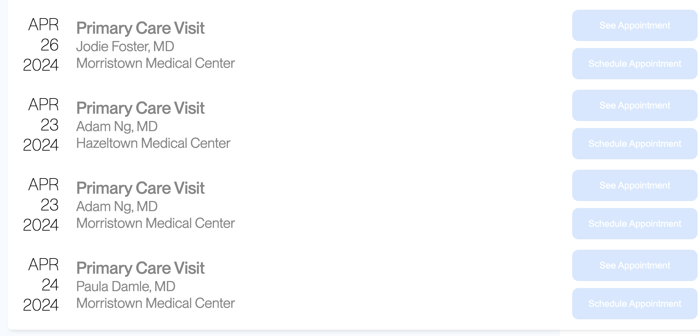
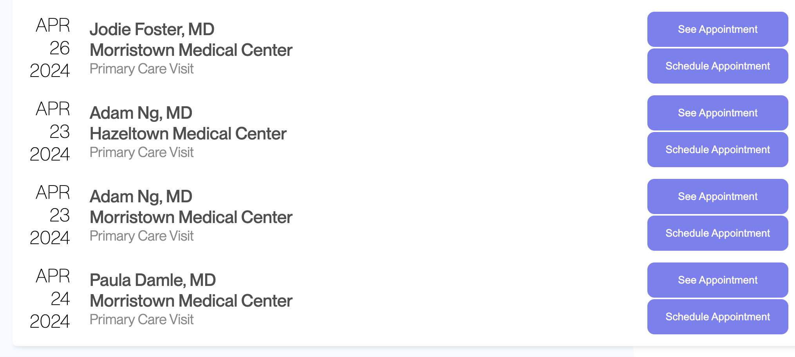
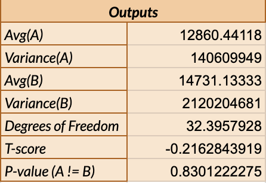
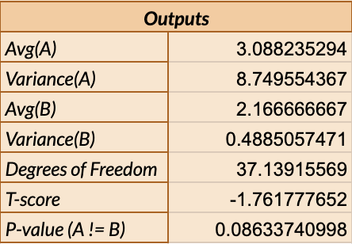

I modified an existing webpage design for appointment scheduling. Users were given the following scheduling task:
"Schedule an appointment with Adam Ng, MD at Morristown Medical Center on April 23, 2024"
Then they were presented with either the version A or version B design. I analyze three factors (misclick rate, time spent on webpage, and total number of clicks) on whether there is a statistically significant difference between the two versions. I observe, through the difference (or lack of difference) between these factors, whether version B demonstrates improved effectiveness over version A.Original Scheduling Page
Modified Scheduling Page
The design changes I made were:
After data was collected for both versions, I wrote null and alternative hypotheses for each of the following 3 data types:
For all the following tests, I will be using a 5% significance level.
I chose a chi-squared test for the misclick rate as this data was categorical
(a True / False representing Misclick / No Misclick). I found that the difference between
versions A and B *was* statistically significant.
The calculations gave us degrees of freedom of 1, which is how many independent items we are looking
at (in this case, 2 - 1, as there are 2 categories being looked at). The chi-squared value represents the difference between the observed (version B) and expected (version A)
values.
The p-value takes into account both degrees of freedom and chi-squared value in order
to determine the statistical significance of the observed difference (where a lower p-value indicates
higher statistical significance).
Since p = about 0.373, and 0.373 < 0.05,
the difference is statistically significant and I conclude that I can reject the null hypothesis.
I chose a two-tailed t-test for the time spent on the webpage as this data was continuous and
I wanted to consider if there was any difference regardless of direction. I found that the
difference between versions A and B was *not* statistically significant.
Data included 34 version A entries and 30 version B entries. Results:

The calculations gave us degrees of freedom of around 32.4, which is based on how many entries were
recorded for each version as well as the variance between entries for each version. The t-score is then
computed based on the averages and variability within each group, and it represents how different the
average value between the two groups are compared to what we would expect from chance. A smaller t-score
indicates the difference is not likekly statistically significant, which is what we see in this case (with
t-score = -0.216).
This is further demonstrated by the p-value of about 0.83, indicating low statistical significance.
As 0.83 > 0.05, I conclude that I fail to reject the null hypothesis.
I also chose a two-tailed t-test for the total number of clicks as this data was continuous and
I wanted to consider if there was any difference regardless of direction. I found that the
difference between versions A and B was again *not* statistically significant.
Data included 34 version A entries and 30 version B entries. Results:

The calculations gave us degrees of freedom of around 37.1, which is based on how many entries were
recorded for each version as well as the variance between entries for each version. The t-score is then
computed based on the averages and variability within each group, and it represents how different the
average value between the two groups are compared to what we would expect from chance. A smaller t-score
indicates the difference is not likekly statistically significant, which is what we see in this case (with
t-score = -1.762).
This is further demonstrated by the p-value of about 0.086, indicating moderately low statistical significance.
As 0.83 > 0.05, I conclude that I
fail to reject the null hypothesis.
In summary, I collected and analyzed 34 user entries using the version A user interface, and
30 user entries using the version B user interface.
I observed that while the misclicks
reduced from 7/34 to only 1/30, there was no observed change in the total number of clicks,
with Avg(A) = 3.088 total clicks and Avg(B) = 2.167 total clicks.
For both versions A and B, both the median and mode number of total clicks were 2, which is the minimum number
of clicks to accurately complete the task. However, the Variance(A) was 8.75 while Variance(B) was
0.489. This large difference means that there were some large outliers in total clicks in version A
that did not repeat in version B.
In terms of time spent on the page, the median for for version A was 8526.5 milliseconds, and the
median for version B was 5537 milliseconds, smaller than version A's but not statistically significant
according to our two-tailed t-test. There was no mode, as the precision of the millisecond resulted in no entry showing up more than once.
Variance(A) for time spent on the page was 140609949 milliseconds, and Variance(B) was 2120204681, both very
high numbers indicating a large variation of time spent between different users for both versions A and B.
In conclusion, the design in version B seemed to have a statistically significant impact in reducing misclicks,
and a small but insignificant impact in the time spent on the webpage as well as the total number of clicks.
This reduction in misclicks could be attributed to the order switch of name, location, and type of appointment,
making it easier to search the page for the target appointment and not accidentally book for the wrong location or name.